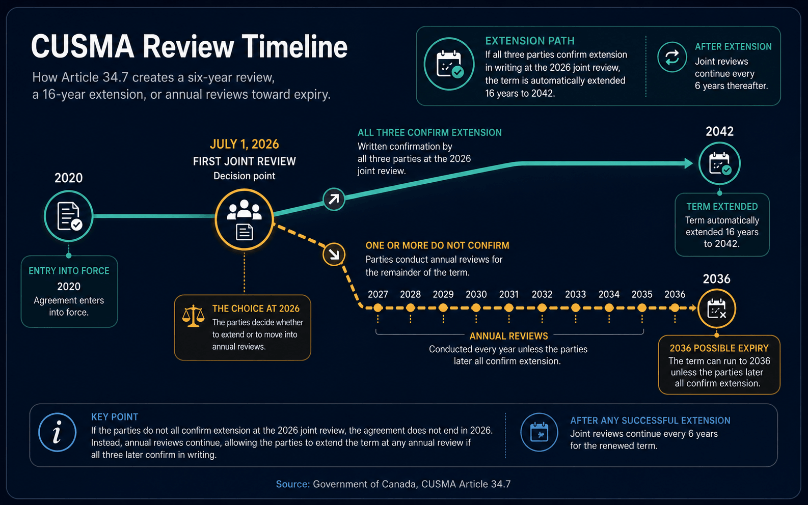

Some of the most consequential dates in freight do not arrive with sirens. There is no border closure, no missile strike, no diesel spike to put on the front page. There is just a clause in a trade agreement coming due. On July 1, 2026, the Canada-United States-Mexico Agreement, the deal Canadians call CUSMA and Americans call the USMCA, reaches the six-year mark, and that anniversary triggers the first mandatory review of the entire framework that governs how more than a trillion dollars of North American trade moves every year.
For a cross-border carrier, this is not background noise. The single most important reason a loaded truck can cross the Canada-US border without a punishing tariff bolted onto the invoice is that the goods on it qualify under this agreement. The review that opens on Canada Day will shape whether that stays true, for how long, and on what terms. It is the quietest deadline on the 2026 calendar, and it may be the one that matters most to the people who move freight for a living.
What Actually Happens on July 1
When the three countries signed the USMCA to replace NAFTA, they built in something NAFTA never had: an expiry date and a scheduled checkup. The agreement entered into force on July 1, 2020 with a sixteen-year term, and Article 34.7 requires the parties to conduct a formal joint review on the sixth anniversary of that date. That anniversary is July 1, 2026. It is best understood as a trigger, not a single day of decision. The review opens a process; it does not slam any doors by sundown.
The groundwork is already laid. The United States Trade Representative ran a public comment period and held a public hearing on the first joint review back in late 2025, gathering input from industries on what should be raised at the table. Mexico has been engaging actively, and the US and Mexico have already wrapped a first round of bilateral talks on revisiting the agreement. Canada has been criticized in some quarters for moving more slowly, which makes the next several months a period of catch-up as much as negotiation. The work that begins on July 1 is the formal review of whether the agreement should continue as written, be amended, or be allowed to wind down.
"July 1 is a trigger, not a guillotine. It opens a process that decides whether North America's trade rules continue, change, or quietly start counting down to an exit."
Why a Trade-Deal Review Lands on the Truck
It is easy to file a trade-agreement review under politics and move on. The reason carriers cannot is that trucking is the physical layer of this agreement. More than half of all merchandise trade between Canada and the United States moves by truck, which means the rules written in Washington, Ottawa and Mexico City are enforced, in practice, at a customs booth in front of a driver holding paperwork. When the framework is stable, that crossing is routine. When it wobbles, every load feels it.
The mechanism that makes this concrete is the rules of origin. To cross tariff-free, a shipment has to qualify as originating under the agreement, and the shipper certifies that with a certificate of origin. Through the tariff turbulence of the past two years, the practical lifeline for Canadian freight has been exactly this: goods that are compliant with the agreement have largely been carved out from the worst of the broad tariffs, while non-compliant goods have been exposed. That single distinction has quietly decided which lanes stayed busy and which dried up. We covered how those carve-outs work at the border in our look at the CUSMA carve-outs, and the bigger cost picture in what the tariff war actually costs Canadian trucking.
So when the review reopens the rules of origin, it is reopening the very test that determines whether a truck crosses cheaply or expensively. That is why a clause about a "joint review" is not abstract to a dispatcher. It is the difference between a predictable cross-border lane and one priced under a question mark.

Three Roads Out of the Review
The review does not have to end in a single dramatic vote. The agreement maps out a few directions it can take, and each one means something different for the people quoting and hauling cross-border freight.
Rules of Origin and the Auto Question
If there is one fight that will define this review for freight, it is automotive. Vehicles and parts are among the most heavily traded goods across the Canada-US border, and the auto supply chain is the most border-dependent of all: a single component can cross between countries several times before it becomes a finished car. The Windsor-Detroit corridor exists because of it. That makes the auto rules of origin the place where a change in the agreement turns most directly into a change in truck volumes.
Under the current agreement, a vehicle generally needs 75 percent regional value content to qualify, already a step up from the NAFTA era. In the early bilateral talks, the US Trade Representative's office has signaled it wants to go further, pushing for North American-built cars and trucks to contain 50 percent US content by value and lifting the overall regional requirement toward 82 percent. Tightening those thresholds reshapes where parts are sourced and assembled, and any reshaping of the auto supply chain is, in the end, a reshaping of which trucks run which lanes.
"Change the percentage of a car that has to be built in North America, and you change which parts cross which borders, on which trucks. Rules of origin are freight policy in disguise."
Canada's stated approach is to seek the long sixteen-year extension while pressing, in parallel, to get the separate sectoral tariffs on steel, aluminum and autos addressed, since those tariffs have weighed heavily on exactly the industries that fill cross-border trailers. How that balancing act lands is the single biggest variable for cross-border carriers heading into the second half of 2026.
What Canadian Shippers and Carriers Should Do Now
None of this can be controlled from a dispatch office, but a good deal of it can be prepared for. The businesses that came through the tariff shocks of 2025 in the best shape were the ones that treated trade compliance as an operational discipline, not a once-a-year filing. A few moves worth making before the review heats up:
How Keylink Is Reading the Review
Keylink is a BC-based, asset-based full truckload carrier built around Canada-US freight, so the health of this agreement is not a side issue for us. It is the ground our business stands on. We run our own trucks across the border, which means we live with the paperwork and the tariff exposure directly rather than passing it down a chain of brokers, and that gives us a clear view of how a change at the negotiating table would actually show up on a customer's lane.
Our posture into the review is simple: keep customers compliant and keep them informed. That means helping shippers make sure their freight qualifies under the agreement as the rules stand today, watching the auto and sectoral-tariff threads as they develop, and being honest with customers about what we know and what is still unsettled. A trade deal can take months to renegotiate, but the load that has to be in Seattle or Calgary on Thursday still has to move on time and at a fair price in the meantime. Reading the policy is part of how we protect that. If your business depends on the Canada-US border, the months around this review are a good time to make sure the carrier hauling your freight is paying attention to more than just the road.
Keylink runs its own fleet on Canada-US lanes and keeps customers compliant and informed as the trade picture shifts. Let's keep your freight moving, whatever the review brings.
Get a Quote →Sources and Further Reading
- Office of the United States Trade Representative, "Public Hearing on the First Joint Review of the USMCA", December 2025.
- Center for Strategic and International Studies, "USMCA Review 2026", 2026.
- Congressional Research Service, "USMCA Joint Review: Process and Role of Congress", 2026.
- Reuters, via Claims Journal, "Canada Seeking 16-Year USMCA Renewal, Sector Tariff Discussions in Trade Talks", June 2026.
- Brookings Institution, "United States-Mexico-Canada Agreement 2026: Review and deja vu", 2026.
- PwC Canada, "Preparing for the CUSMA 2026 review", 2026.
- MLT Aikins, "CUSMA's 2026 joint review: what employers need to know", 2026.